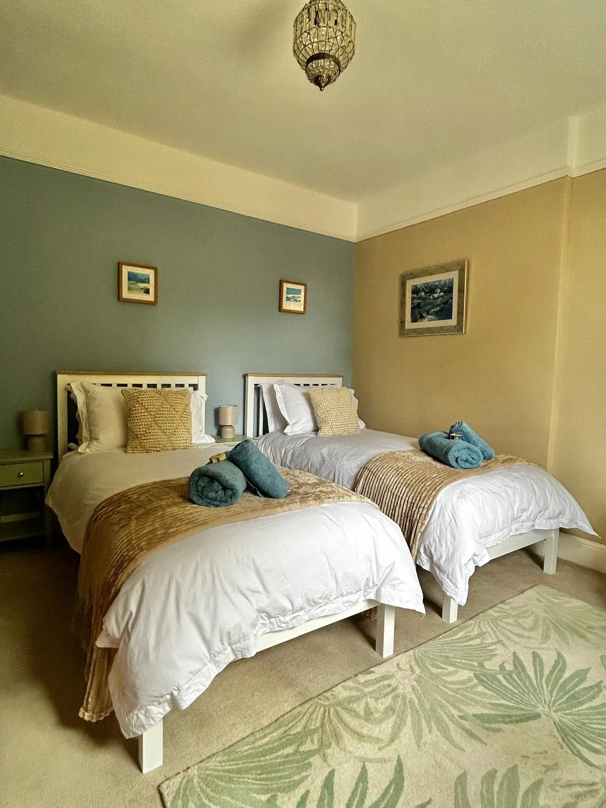
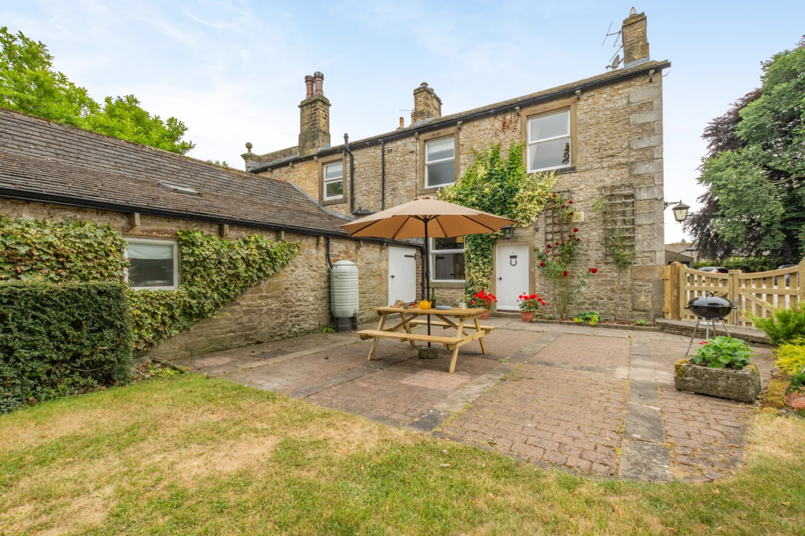
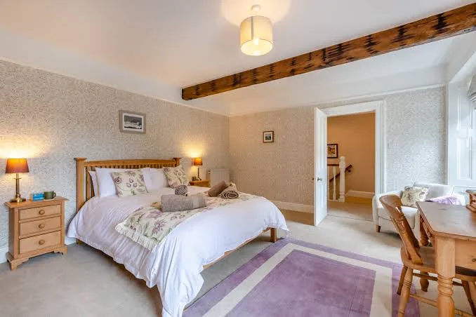

Skipton
4 milesA lively market town with a Norman castle, independent shops, pubs, restaurants and a canal basin. Go by car, or make a longer walk of it along the towpath.
A beautifully restored 19th-century cottage in the heart of Gargrave, with the Yorkshire Dales on the doorstep.
Originally the butler's home for a grand Gargrave house, Knowles Cottage keeps its period character while giving you an easy, comfortable place to stay.
High ceilings, original shutters and warm timber sit alongside a relaxed living space, Smart TV and the comforts you want after a day outdoors. The cottage sleeps four in a king-size bedroom and a twin room, with an upstairs bathroom offering both a walk-in shower and freestanding bath.
Walk by the river in the morning. Follow the canal after lunch. Light the wood burner when you get home.


Settle into the sofa after a long walk, light the wood burner and put your feet up. The farmhouse-style dining table makes an easy centre for slow breakfasts, maps, board games and supper together.


The main bedroom has a king-size bed and generous storage; the second is a welcoming twin with space to sit and read. Both carry the cottage's calm palette of warm wood, soft neutrals and botanical details.

Stone walls, timber, high ceilings, old shutters and a traditional staircase give the house its sense of place, while the soft greens and natural finishes keep it light and unfussy.

Knowles Cottage dates back to around 1800 and was once the butler's cottage for a grand Gargrave house. Its scale, stonework and position in mature grounds still give it the feel of a tucked-away period home rather than a standard holiday let.
Gargrave has long been shaped by its landscape. The River Aire runs through the village, while the Leeds & Liverpool Canal brought boats, trade and towpath life through the heart of the community. Today that same setting makes it a natural base for walkers, cyclists and anyone wanting a gentler way into the Yorkshire Dales.

Step out into the mature grounds whenever the weather allows. There is space for children and a four-legged friend to potter, plus a picnic table and barbecue for summer evenings.
Guests are also welcome to enjoy the owner's adjacent front garden, and there is private off-road parking for two cars.

Gargrave is small enough to feel peaceful, but useful enough for a relaxed stay: pubs, a shop, village walks, the river, the canal and a railway station are all close by.


Stroll to the River Aire, the canal towpath or the village green without needing the car.
Pubs, local shops and everyday supplies are nearby, so short stays stay simple.
Skipton, Malham and the National Park are close enough for easy days out.
A lively market town with a Norman castle, independent shops, pubs, restaurants and a canal basin. Go by car, or make a longer walk of it along the towpath.
Classic limestone country: Malham Cove, Gordale Scar and Janet's Foss are all close enough for a memorable day out.
The National Park boundary is close by, with walking, cycling, quiet lanes and wide views in easy reach.
The towpath runs through Gargrave itself. It is the gentle option: flat, scenic and lovely in almost any weather.

Misty mornings, summer gardens, quiet canal paths and evenings indoors after a day outside.




Whether you are planning long walks in the Dales, slow afternoons by the canal or a few quiet days away, Knowles Cottage is waiting.
Check availability & book Bookings are handled securely through Holiday Cottages.